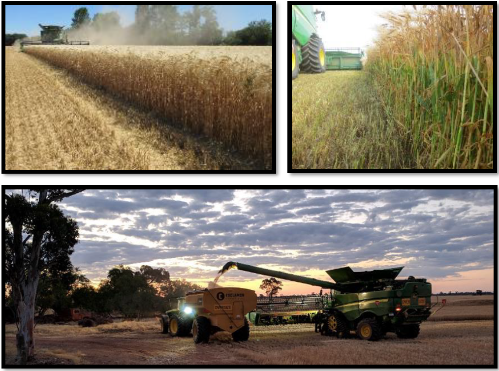

Conseils et astuces
Identifier l’origine des pertes : unité de récolte, organes de battage, caisson de nettoyage ou pertes avant moisson.
Répartition de la matière : assurer une distribution uniforme sur le caisson de nettoyage.
- Vérifier en réalisant un STOP machine pendant la récolte.
- Ajuster les diviseurs des vis d’alimentation si nécessaire.
- Installer des couvercles sur les grilles de séparation du contre-batteur pour équilibrer la répartition.
Surcharge côté droit du caisson de nettoyage (conditions sèches) :
- Relever complètement le diviseur droit de la vis d’alimentation.
- Installer des plaques d’obturation côté droit du contre-batteur si nécessaire.
- Maintenir la grille à otons suffisamment ouverte.
Variétés difficiles à battre : utiliser une configuration de battage agressive :
- écartement du contre-batteur jusqu’à 5 mm,
- contre-batteurs à petit fil,
- plaques d’obturation.
Influence des conditions de récolte :
- Le type de culture, la rigidité de la paille et l’humidité influencent fortement les réglages.
- Évaluer ces paramètres avant de commencer la récolte.
Volume de paille : influence directe sur la productivité de la machine.
- Le rapport grain / matière autre que grain (MOG) impacte les performances.
Paille verte et humide : rend le battage plus difficile.
Humidité de la plante : augmente du sommet vers la base.
- La hauteur de chaume influence le débit de récolte.
Faible rendement :
- utiliser une largeur d’unité de récolte plus grande,
- augmenter la vitesse d’avancement pour maintenir la machine chargée.
Réglages cabine : vérifier régulièrement que les valeurs affichées correspondent aux valeurs réelles (ex. ouverture de grille).
Paille très sèche et cassante : risque de surcharge du caisson de nettoyage.
- Installer des plaques d’obturation.
- Augmenter l’écartement du contre-batteur.
- Réduire le régime du rotor, tout en maintenant un battage efficace (min. 800 tr/min).
